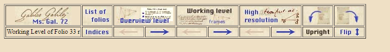
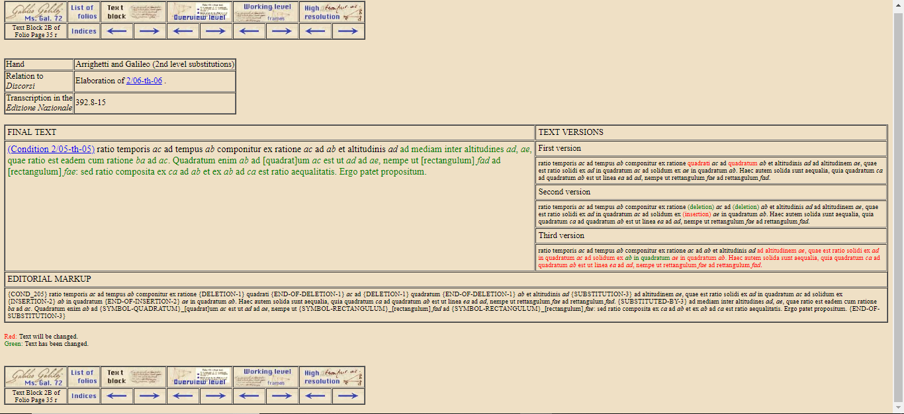
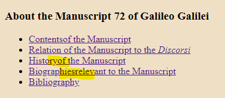
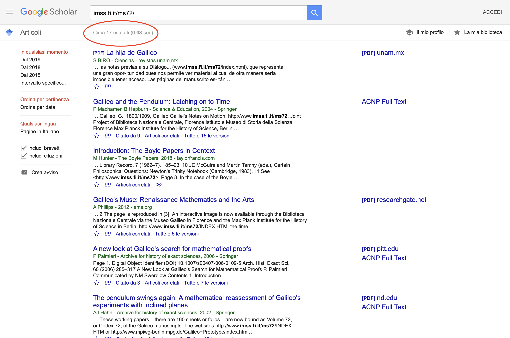
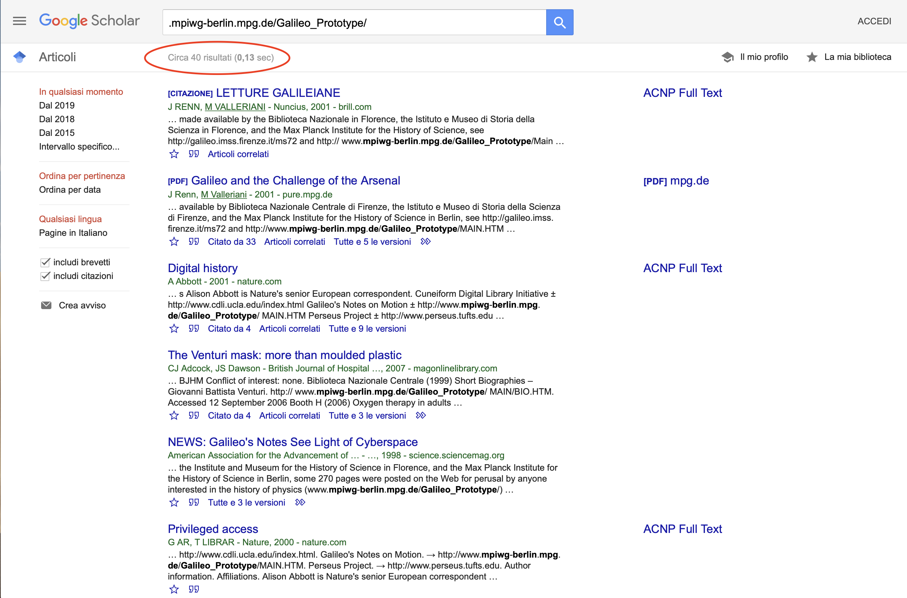

Galileo Galilei’s Notes on Motion
Table of Contents
Abstract
Galileo Galilei’s Notes on Motion is a diplomatic digital edition most recently updated in 1999 that results from a joint collaboration between the Biblioteca Nazionale Centrale and the Istituto e Museo di Storia della Scienza, both in Florence, and the Max Planck Institute for the History of Science in Berlin. It provides the digital edition of Galilei’s Codex Ms. Gal. 72, displaying folios 33 to 196, along with relevant propositions from Discorsi e dimostrazioni matematiche intorno a due nuove scienze (1638) related to the manuscript. The aim of this review is to evaluate the presentation and the contents of the edition, along with its effectiveness related to the academic purpose. In this essay, different assessment measures will be taken into account, all relating to the date in which the edition was published, along with the possible implementations that were not addressed at the time to provide a long-lasting scholarly work on the manuscript. As a result, the review considers the edition groundbreaking both for the functionalities and contents available at the time it was published, but the interface seems too outdated to be used in the modern digital world.
Introduction
The coincidence of the birth of modern science with Galileo Galilei’s discoveries and rigorous method of research has been noted by many scholars of the Twentieth Century (Renn 2020, 86). As a matter of fact, the Italian scientist’s contributions ranged from astronomy to studies of motion that influenced, among others, Isaac Newton and Leonhard Euler. In this regard, the Discorsi e dimostrazioni matematiche intorno a due nuove scienze (Galilei [1638] 1950) is a groundbreaking work that witnesses a change of approach towards natural phenomena, from an antique and medieval conceptual background, grounded in Aristotelian natural philosophy and Archimedean mechanics, to new considerations based on the practical knowledge of the time and at the foundation of classical mechanics.
According to Jürgen Renn, though, there is no such thing as a scientific revolution. Every new conceptual system arises out of preexisting ones, through a progressive accumulation of notions that deviate from traditional assumptions, so that “under appropriate circumstance, an originally marginal concept within a given system may eventually find itself at the center of a new conceptual system” (2020, 28). As a natural consequence, new core principles of scientific theory can only be secured through a disruptive reorganization of knowledge. It comes as no surprise that in this operation Galileo saved the drafts of the Discorsi, Codex Ms. Gal. 72, as they were more representative of the conceptual shift than the published version, due to a detailed study supported by propositions, geometric drawings and calculations (Renn 1998, 193).
Galileo Galilei’s Notes on Motion had the primary purpose of innovatively displaying and analyzing the over 300 pages long codex, physically kept in the archives of the Biblioteca Nazionale Centrale of Florence (hereafter BNF). As such, it is believed to be the first significant scholarly digital edition (hereafter SDE) of the history of science (Abbott 1998). The project is the outcome of a joint team effort between different institutions – the BNF provided the digital images of the manuscript’s pages, while the Istituto e Museo di Storia della Scienza, based in Florence as well, along with the Max Planck Institute for the History of Science in Berlin, embedded the codex in an appropriate electronic environment, free and easy to use, in accordance with the scholarly work that had to be carried out.1 Unfortunately, contact information of the project representatives has not been made public. The homepage of the website also mentions the edition winning the Pirelli International Award in 1998, an annual prize assigned to the best works of genius on the Web.2
The project and its goals
Galileo Galilei’s Notes on Motion can be considered a forerunner in the field of digital editions. Although it is 23 years old, it explicitly carries the fundamental message that traditional editorial techniques may not be sufficient to convey an exhaustive interpretation of a text. Because of both its fragmentary nature and the difficulty to access the original folder of manuscripts before it was digitized, Ms. Gal. 72 was academically neglected for centuries, as it was accessible exclusively at the BNF (Renn 1998, 194). Furthermore, previous works on the codex such as the National Edition by Antonio Favaro (Galilei 1909) and the article published by Stillman Drake in Annali di Storia della Scienza (Drake 1980) were reductive when compared to their academic scope, in that they deliberately omitted or corrected parts of the document (Renn 1998, 193). Because these scholars did not have the possibility to see what an integral folio looked like and could not draw conclusions on the date of the manuscripts through physical elements like watermarks, ink or type of paper, their approach overlooked the chronological order of the pages. Such a problem should not be underestimated, as the actual placement of the notes points to the conceptual evolution of Galileo’s thinking process over time.
The re-evaluation of the codex through an online edition shed light on its complexity of content, chaotic and extremely varied, and on the possible ways to address it properly on a brand-new platform. Galileo Galilei’s Notes on Motion was, in fact, a pilot project connected to the endeavor of BNF to make the entire Florentine Galileo collection digitally accessible. With that approach in mind, such diverse material clearly needed a thorough work on, so that it could be represented in its entirety as a new tool for further research.3 The concept of an “electronic representation” opens Ms. Gal. 72 to many interpretative perspectives, becoming so successful that it is still used as a metric for the very definition of digital edition as something that “cannot be given in print without significant loss of content and functionality” (Sahle 2016, 27).
Another strength of the digital edition concerns hyperlinks, which make it easy to navigate through internal and external references of the manuscript. This feature gives to the user an enhanced insight into Galileo’s mindset, as opposed to the previous printed editions of the document. In fact, such a modularized structure offers a “fluid publication”, a process defined as the possibility to “connect various forms of representation with editorial knowledge and contextual material” (Sahle 2016, 29).
Apart from interactivity, the main characteristics of Galileo Galilei’s Notes on Motion are ease of access and open-endedness. In fact, as Peter Damerow and Jürgen Renn write:
[…] Since the manuscript is accessible through the Internet, no scholar is forced anymore to first apply for a travel grant to go to Florence in order to study it. The second element is, however, really new […]. Once the book is printed, there is no longer any possibility of improving the edition except by starting all over again and producing a new edition.
Indeed, Galileo Galilei’s Notes on Motion is a “tool for the future” (Damerow and Renn n.d.), as it would facilitate the creation of a new version of the edition. That being said, the most recent update dates back to 1999,4 so the SDE cannot be considered representative of this view. Another noteworthy aspect is that this project was meant to be a starting point for further research through an open call invitation on the website, in order to develop a joint collaboration among Galileo’s scholars. In fact, two of the founders claim: “The aim was not only to provide easy access to the codex, but also to support further research on it” (Damerow and Renn n.d.).
As a result, the target audience is made of scholars who may deepen their interest in Galileo’s works, but also, and most importantly, of researchers needing a complete understanding of the codex – a consequence of making the document easily accessible and searchable. This democratic character has been fundamental for the definition of an SDE from the beginning:
We all know that in the print world, few of us have been able to afford the full-scale scholarly edition of all the works we study. Even our libraries have trouble supplying a whole intellectual community with all the full-scale scholarly editions they should have purchased.
The importance of reviewing an ‘early SDE’ edition
The transformations of the Web since the 1990s, which have turned it from an environment of passive use of content where production was reserved to professionals to a space of active involvement, have led to an infrastructure that allowed users to take advantage of the many computational possibilities of the machine. Digital Humanities have played a fundamental role in the acquisition and dissemination of the possibilities opened by this model, contributing to spread a new epistemological paradigm of culture production and use through new access systems and models of document representation and manipulation.
While digital edition technology and terminology have changed over time according to new technical advances, for instance undergoing a shift of focus from the affirmation of hypertext in 1996-2005 to interoperability and the semantic web (Mancinelli and Pierazzo 2020), scholarly requirements have remained the same. This is clear when looking at the principles for the evaluation of Electronic Scholarly Editions provided in 1993 by the Modern Language Association (Shillingsburg 1993), which apart from the technical requirements of usability, platform independency, security, design and expandability that have become common for SDEs, already discuss the need for interoperability between systems, like in the case of the choice of an encoding standard.
As it is possible to see from the current RIDE criteria for reviewing what are now called digital editions (Sahle 2014), these principles have not changed per se. However, SDEs are often perceived as mere tools whose importance is tied to technological progress, rather than to their status of authoritative information resources.
According to Pierazzo (2015, 75), it is the inherent “Heraclitean”, unstable nature of a digital edition, as it challenges the traditional principle of reductio at unum at the core of scholarly editing, that is mainly responsible for the distrust of the scholarly community. The consequent lack of common assessment methods led Fotis Jannidis to state in 1999 that digital editions are as variable as the criteria used to evaluate them (Jannidis 1999), but still, 18 years later, Peter Shillingsburg (2017, VII) highlighted the need for knowledge production to be primarily driven by evidence – shared standards among scholars to verify sources, authoritativeness of the institution, editorial declarations on the principles adopted for digital editions, and the absence of errors.
As a result, “the challenges ahead are more scholarly than they are technical, since technical solutions and infrastructures already exist in practice; what is missing is a cultural shift capable of making these initiatives scholarly sound” (Pierazzo 2019, 220). In the same way as Galileo’s operation of progressive knowledge reorganization was misunderstood for a sudden scientific revolution, the affirmation of SDEs in the scholarly community should not be made to coincide with the concept of a brand-new approach derived from the outstanding advent of the digital environment, but rather with a progressively redesigned shared basis of evaluation. Only in consequence of this cultural shift editions like Galileo Galilei’s Notes on Motion will be considered reliable thanks to their age, rather than in spite of it.
Content and structure
Codex Ms. Gal. 72 includes 241 folios, numbered from 1 to 1965, written by Galileo or his disciples Mario Guiducci and Niccolò Arrighetti. On the website, the sections concerning the documents are immediately clear. The most prominent link of the homepage provides information on how to use the electronic representation of the manuscript. Beneath it, it is possible to access Ms. Gal. 72 on different levels: (1) as a list of folio pages,6 (2) through an index of Italian and Latin words, calculations, drawings and propositions,7 and (3) through a record of propositions8 that links the archival references of the mathematical elaborations in the manuscripts to those published in the Discorsi.
List of folio pages

At the ‘Overview level’, the user accesses a facsimile of the folio, below a table with variable contextual information: a summary of its contents, information on paper size, watermarks, handwriting, relevant references and, where possible, links to pages of the Discorsi the text refers to. For instance, for folio 43r are specified size, watermark (and who has identified it), a brief description of its content and a bibliographic reference for further information. The right side displays the transcription of the ‘final text’.

The last working level for Ms. Gal. 72 is the best facsimile among all the other levels, displayed in what was considered high resolution back in 1999. Although the images are still well usable for today’s standards, the quality of the reproduction is still not high enough and it is therefore quite difficult to properly decipher the text, especially because the transcription is referred to as a “reading aid”.9 A necessary improvement should concern the inclusion of magnifying functionality on the folio page, and a feature that would allow to search through the text word-by-word.
Editorial and technical principles
‘Editorial and technical principles’ presents a selection of general bullet points explaining how the digital edition is different from a traditional printed one. However, while the source for the scholarly work is clear – the codex –, it is not explicit here what the editorial principles and the underlying model are. The only textual edits taken into consideration are additions and deletions, it seems that no TEI encoding principles have been used in this regard. Instead, it reads: “text characteristics are converted in a suggestive way into the standard features of the HTML format. Thus, for instance, Galileo’s underlinings of text are represented by bold face text. Colored text is used to indicate intended and realized corrections”.10 This last remark is also ambiguous, as every version of the text inherently portrays a realized intention of the author. A TEI encoding of the text would clarify equivocal statements and improve both usability and interoperability, as unlike HTML, it provides sets of tags and attributes specifically designed for different documents and textual phenomena (TEI Consortium 2021).
On the other hand, drawings and geometric calculations are represented in box drawings and transcriptions. A very interesting aspect of the SDE is, therefore, its effort towards transparency, which allows the user to make positive considerations on its reliability.
Indices and list of propositions
The ‘Indices’ are divided into the categories of words, numbers and variables. These are further separated into ‘Latin’, ‘Italian’, ‘Calculations’, ‘Drawings’, and ‘Propositions’ (both of the Discorsi and other propositions). When clicking on the selected area of research, an alphabetical list of occurrences appears along with the number of references found for each word, number or variable name. This tool is very helpful, but could be further extended adding a choice based on the topics dealt with by Galileo (e.g. investigations about acceleration and free fall).
As part of the index, Ms. Gal. 72 is directly linked to Discorsi through the essay on motion De motu locali contained in the book. As a result, Galileo Galilei’s Notes on Motion provides a list of the propositions of the treatise, which set the foundation of the ‘two new sciences’ in the Discorsi, theoretical mechanics and resistance of material. The propositions of the codex are linked to both their full text contained in the Discorsi and other theories that are useful to understand the deductive structure of the theorems without needing external sources.
Other sections of the website
There are other three sections to browse through on the website: ‘About the Manuscript 72 of Galileo Galilei’, ‘About the Electronic Archive Project’ and ‘About the Present Version of the Electronic Representation’.11 The first one includes links to a detailed but concise summary of the manuscript (‘Contents of the Manuscript’); its relationships to Discorsi (‘Relation of the Manuscript to the Discorsi’); its history for each century from the 17th to the 19th century and changes that have been made on the document by the different collectors over time (‘History of the Manuscript’); a short list of biographies relevant to the study of the manuscript (‘Biographies relevant to the Manuscript’) and, most importantly, the bibliography used. The second section examines the project in more detail both in its structure and the technical principles adopted, as well as its history and the staff involved. Finally, the last section ‘About the Present Version of the Electronic Representation’, includes links to system requirement specifications and a call for scholarly participation. This is the only place where a contact of some kind can be found – the project’s email address. All webpages are interlinked with other relevant sections and references.
User interface of the digital edition
Galileo Galilei’s Notes on Motion struggles to find an identity since the very first glance: when the user searches the SDE, the results are confusing. Among the two webpages that are referring to the electronic representation,12 only the first one directly accesses the website. Büttner et al. (2004, 140) state that the choice of the double access point was deliberate, but it is misleading as, by definition, a URL uniquely identifies one single resource.13

Finally, although the division into three working levels mirrors the various degrees a scholar can explore the manuscripts, it would be interesting to add a function that makes it possible to compare two pages and the related markup on the same webpage. This way, the user would not have to go back and forth between different links and pages. Moreover, the possibility to download both search results of the ‘Indices’ and the editorial markup for selected folio pages would encourage further research on the text.
Sustainability of the edition
 
This claim is now true to some extent. In fact, not only does the user have access to indices that are fundamental tools to the scholarly work, but they can also consult the list of propositions of Galileo’s Discorsi for further possibilities of comparison between the two documents. At the same time, however, the design is so austere that it is visually difficult to browse through all the pages for a long working session, especially when it comes to reproductions of drawings and formulas.
Furthermore, real open-ended access should mean at least consistency with the languages of the edition: English and vernacular. In fact, the propositions of the Discorsi have been translated into English, but as the authors state on the website,17 it has not been the same for Ms. Gal. 72. In this way, scholars who do not know vernacular can only partially benefit from the edition. For what concerns copyright status, the reusability of the edition is still very similar to the classical print edition: only for scientific use, no copies allowed. Lastly, what is missing in this SDE is a mention of the results of the call for scholarly participation, as a proof of its open-endedness.
Conclusion
Galileo Galilei’s Notes on Motion is a groundbreaking scholarly digital edition whose editorial principles and aims highly overlap with contemporary ones. The study of Codex 72 is ‘fluid’ in a sense that it can be updated at any given moment, while the connections among its contents are modelled by a well-designed, but complex network of hyperlinks. From the start, the digital edition allowed its target audience to benefit from easy access and open-endedness while encouraging users to contact the staff for any kind of personal contribution.
The SDE presents, however, many issues: it lacks interoperability, graphics are outdated, there is no mention of the outcome of the call for scholarly participation. There is also too little information about contacts, the SDE is not included in the institutions’ collection of scientific projects, and, most importantly, it has not been updated since 1999. Despite these problems, it is fundamental to keep in mind the initial purposes and methods of the institutions involved, in order to compare them to what we are familiar with today. The potential for improvement of Galileo Galilei’s Notes on Motion is clear from its survival for such a long time. If the SDE was translated into a modernized interface, it would certainly reach a wider audience through the ever-present principles of open access and open-endedness.
Bibliography
- Abbott, Isabel. 1998. ‘Galileo’s manuscripts go on the internet.’ Nature (11 June 1998). https://www.nature.com/articles/31049.
- Büttner, Jochen, Peter Damerow, and Jürgen Renn. 2004. ‘Galileo’s unpublished treatises.’ In The Reception of the Galilean Science of Motion in Seventeenth-Century Europe, edited by C.R. Palmerino and J.M.M.H. Thijssen. Boston Studies in the Philosophy of Science, vol 239. Dordrecht: Springer. https://doi.org/10.1007/978-1-4020-2455-9_6.
- Damerow, Peter, and Jürgen Renn, n.d. ‘Galileo at Work: His Complete Notes on Motion in an Electronic Representation.’ https://web.archive.org/web/19990209174712/https://www.mpiwg-berlin.mpg.de/texts/Galileo.Nuncius.html.
- Drake, Stillman. 1980. ‘Galileo’s notes on motion’. Supplemento agli annali dell’Istituto e Museo di Storia della Scienza, no. 2. Firenze: Istituto e museo di storia della scienza.
- Galilei, Galileo. 1950. Opere. Edited by Franz Brunetti. Torino: Utet.
- Galilei, Galileo. 1909. Le opere di Galileo Galilei: edizione nazionale sotto gli auspicii di sua maestà il re d’Italia, Vol. 17. Edited by Antonio Favaro. Firenze: Tipografia Barbera.
- Istituto e Museo di Storia della Scienza, n.d. ‘Museo Galileo Digital Library’. http://web.archive.org/web/20190609090111/https://www.museogalileo.it/en/library-and-research-institute/digital-library/information-digital-library.html.
- Jannidis, Fotis. 1999. ‘Bewertungskriterien für elektronische Editionen’. https://web.archive.org/web/20200219004005/http://www.iasl.uni-muenchen.de/discuss/lisforen/jannidis.htm.
- Mancinelli, Tiziana, and Elena Pierazzo. 2020. Che cos’è un’edizione scientifica digitale. Roma: Carocci.
- Pierazzo, Elena. 2015. Digital Scholarly Editing: Theories, Models and Methods. Farnham, Surrey: Ashgate.
- Pierazzo, Elena. 2019. What future for digital scholarly editions? From Haute Couture to Prêt-à-Porter. International Journal of Digital Humanities 1 : 209-220. https://doi.org/10.1007/s42803-019-00019-3.
- Renn, Jürgen. 1998. ‘Galileo’s manuscript on mechanics. The project of an edition with full critical apparatus of Mss. Gal. Codex 72’. Nuncius, no. 3: 193-241. Firenze: Istituto e museo di storia della scienza.
- Renn, Jürgen. 2020. The Evolution of Knowledge. Rethinking science for the Anthropocene. Princeton: Princeton University.
- Sahle, Patrick. 2014. ‘Criteria for Reviewing Scholarly Digital Editions. Version 1.1’. https://web.archive.org/web/20211013085211/https://www.i-d-e.de/publikationen/weitereschriften/criteria-version-1-1/.
- Sahle, Patrick. 2016. ‘What is a Scholarly Digital Edition?’. In Digital Scholarly Editing. Theories and practices, edited by James Driscoll and Elena Pierazzo, 19-41. Cambridge: Open Book Publishers.
- Shillingsburg, Peter. 1993. ‘General principles for Electronic Scholarly Editions’. https://web.archive.org/web/20200923010129/http://sunsite.berkeley.edu/MLA/principles.html.
- Shillingsburg, Peter. 2017. Textuality and knowledge. University Park: Pennsylvania State University Press.
- TEI Consortium. 2021. ‘TEI P5: Guidelines for Electronic Text Encoding and Interchange. 4.2.2’. https://web.archive.org/web/20210914185537/https://tei-c.org/release/doc/tei-p5-doc/en/html/index.html.
Notes
- Cf. https://web.archive.org/web/19990424094058/http://www.imss.fi.it/ms72/MAIN/STAFF.HTM. ↑
- Cf. https://web.archive.org/web/20010418185357/http://www.pirelliaward.com/. ↑
- The feasibility study, initially the ‘Galileo Einstein Electronic Archives’ was funded by the US National Science Foundation (NSF). However, the project related to Einstein failed due to copyright issues and the NSF decided to interrupt all research on the matter, as the project was thought to be ‘unrealistic’. At that time, the institutions involved in the SDE did not even exist, but the scholars involved kept on working on the project and made it possible to publish it ten years later. ↑
- Cf. https://web.archive.org/web/19990128203948/http://www.imss.fi.it/ms72/INDEX.HTM. ↑
- Cf. http://web.archive.org/web/20200205020359/http://www.imss.fi.it/ms72/MAIN/NUMFOL.HTM. ↑
- Cf. https://web.archive.org/web/20200205015656/http://www.imss.fi.it/ms72/MAIN/LIST.HTM. ↑
- Cf. https://web.archive.org/web/20200216120114/http://www.imss.fi.it/ms72/MAIN/INDECE.HTM. ↑
- Cf. https://web.archive.org/web/20200205125110/http://www.imss.fi.it/ms72/MAIN/PROP.HTM. ↑
- Cf. https://web.archive.org/web/20200205045844/http://www.imss.fi.it/ms72/MAIN/EDITOR.HTM. ↑
- Cf. https://web.archive.org/web/20200205045844/http://www.imss.fi.it/ms72/MAIN/EDITOR.HTM. ↑
- Cf. https://web.archive.org/web/20201127015451/http://www.imss.fi.it/ms72/INDEX.HTM. ↑
- Cf. https://web.archive.org/web/20201127015451/http://www.imss.fi.it/ms72/INDEX.HTM and https://web.archive.org/web/20201007180344/https://www.mpiwg-berlin.mpg.de/Galileo_Prototype/MAIN.HTM. ↑
- Cf. https://web.archive.org/web/20210114184940/https://url.spec.whatwg.org/. ↑
- Cf. https://search.google.com/search-console/welcome?hl=it. ↑
- Cf. https://web.archive.org/web/20190607090234/https://www.museogalileo.it/en/library-and-research-institute/projects/databases-and-bibliographies.html. ↑
- Cf. https://web.archive.org/web/20201127015451/http://www.imss.fi.it/ms72/INDEX.HTM. ↑
- Cf. https://web.archive.org/web/20200216153230/http://www.imss.fi.it/ms72/MAIN/CONTENTS.HTM. ↑
@article{galileo,
author = {Lippolis, Anna Sofia},
title = {Galileo Galilei’s Notes on Motion},
journal = {RIDE – A review journal for digital editions and resources},
number = {14},
year = {2021},
doi = {10.18716/ride.a.14.2},
url = {https://doi.org/10.18716/ride.a.14.2},
}TY - JOUR
AU - Lippolis, Anna Sofia
TI - Galileo Galilei’s Notes on Motion
T2 - RIDE – A review journal for digital editions and resources
IS - 14
PY - 2021
DA - 2021/11
DO - 10.18716/ride.a.14.2
UR - https://doi.org/10.18716/ride.a.14.2
PB - Institut für Dokumentologie und Editorik e.V.
LA - en
ER - Lippolis, A. S. (2021). Galileo Galilei’s Notes on Motion. RIDE – A review journal for digital editions and resources, (14). https://doi.org/10.18716/ride.a.14.2Lippolis, Anna Sofia. "Galileo Galilei’s Notes on Motion." RIDE – A review journal for digital editions and resources, no. 14, 2021. https://doi.org/10.18716/ride.a.14.2.Lippolis, Anna Sofia. "Galileo Galilei’s Notes on Motion." RIDE – A review journal for digital editions and resources, no. 14 (2021). https://doi.org/10.18716/ride.a.14.2.